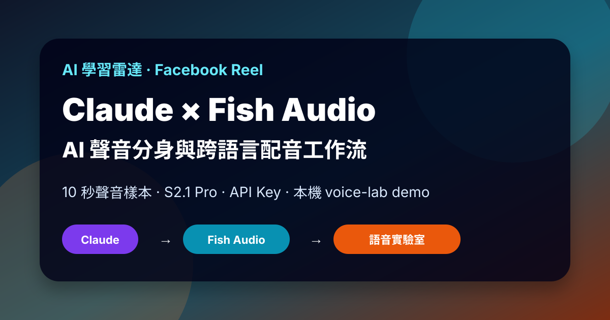
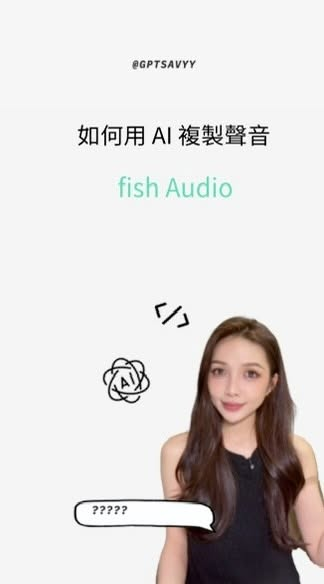
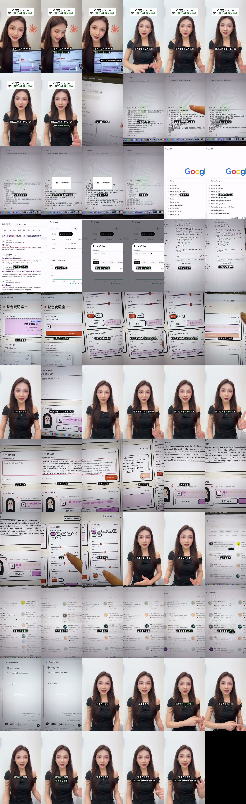

Facebook｜S 的 AI 研究所：用 Claude + Fish Audio 做 AI 聲音分身與跨語言配音

一句話摘要
這支 Reel 的重點不是單純「找到免費聲音模型」，而是示範一個 Claude-assisted voice cloning prototype：讓 Claude 生成或修改本機網頁工具，接 Fish Audio API，使用 10 秒聲音樣本建立聲音模型，再輸入中文或英文文稿生成類似本人聲音的配音。這很適合 AI 學習雷達保存為 voice cloning / TTS API 的實作案例，但也需要非常清楚的聲音權、肖像權、詐騙防範與人工標示規範。
來源脈絡
| 欄位 | 內容 |
|---|---|
| 原始分享連結 | https://www.facebook.com/share/r/1KggFHVjCC/ |
| Reel URL | https://www.facebook.com/reel/1569248914335063 |
| 作者 | S 的 AI 研究所 |
| Reel ID | 1569248914335063 |
| 影片長度 | 約 65 秒 |
| OpenGraph 顯示 | 約 1.6 萬次觀看、312 個心情、553 則留言、152 次分享 |
| yt-dlp 擷取觀看數 | 約 17,175（Facebook 計數可能因快取、地區與端點不同） |
| Caption | `AI 聲音分身教學🤓 不敢相信這個模型竟然免費 留言「fish」 直接傳給你 #ai` |
Reel 內容與畫面流程
影片標題為「如何用 Claude 做出你的 AI 聲音分身」。畫面與逐字稿顯示的流程大致如下：
- 打開 Claude，切換到 Code / coding assistant 工作模式。
- 將一段 prompt 貼給 Claude，要求建立一個「聲音實驗室」類的小型網頁工具。
- 指示 Claude 整合 Fish Audio 的聲音模型與 API。
- 到 Google 搜尋 `Fish Audio API`，進入 Fish Audio API Keys 頁面。
- 建立新的 API key，並把 key 放入本機專案的 `.env.local` 或環境變數中。畫面有出現 `FISH_API_KEY=` 一類欄位；公開文章不保存任何 key。
- 在本機開發伺服器中打開 `localhost:3939` 類的語音實驗室介面。
- 上傳約 10 秒自己的聲音樣本。
- 選擇 Fish Audio model，畫面可見 `s2.1-pro-free` / `S2.1 PRO, FREE` 類字樣。
- 輸入中文台詞或英文文章，生成與原聲音相似的語音。
- 調整情緒、速度、音量、情感強度、穩定性等參數，輸出 MP3 / WAV。
- 若不想使用自己的聲音，也可在 Fish Audio 官方聲音庫中選擇既有 AI 聲線。


逐字稿重點
Whisper 對中文短影音有一些誤聽，例如把「聲音」轉成「生意」、把 Claude 誤成「卡」，但整體語意可從畫面校正：
> 在 Claude 裡複製自己的聲音分身，可以讓它念任何東西，效果好到幾乎一模一樣。打開 Claude，切換到 Code，把 prompt 貼進去，描述要用 Fish Audio 聲音模型與 API 整合。接著搜尋 Fish Audio API，建立新的 API，重點是目前可免費測試。設定好之後，上傳 10 秒自己的聲音，Claude 會使用 Fish Audio 的 S2.1 Pro / S2.1 Pro Free 來複製聲音。也支援跨語言生成：貼一篇英文文章，就能獲得英文口播。情緒、速度都可以調整；如果不想用自己的聲音，也可以在 Fish Audio 官網找已經訓練好的 AI 聲線。
官方來源交叉驗證
### Fish Audio 官方能力
Fish Audio 官方首頁將產品定位為 AI voice platform，主打文字轉語音、語音複製、語音轉文字、語音 agent、即時串流與多語言支援。頁面也顯示「S2.1 Pro」與「免費試用 S2.1 Pro」，並提供 Web App 入口。
### Fish Audio docs：API / SDK / Web App
Fish Audio docs 的 Overview 說明，核心功能可以透過 Web App、REST API 與官方 SDK 使用；核心功能包含 Text to Speech、Speech to Text、Voice Cloning、Realtime Streaming、Manage Voices。模型段落也列出 S2.1 Pro、S2.1 Pro Free、S2 Pro 等模型路徑。
來源：https://docs.fish.audio/overview/capabilities
### Voice Cloning
Fish Audio Voice Cloning 文件說明，可用自己的音訊建立 reusable voice model，取得 voice `id` 後，在 TTS 時以 `reference_id` 使用該聲音；可透過 API、Python library 或 JavaScript 實作。文件也列出品牌聲音、個人聲音、角色聲音、跨語言 dubbing / localization 等使用場景。
來源：https://docs.fish.audio/features/voice-cloning
與既有 AI 學習雷達條目的關係
AI 學習雷達在 2026-08-01 已收過 Nate Herk 的 Fish Audio S2.1 Pro Free API 案例，當時重點是查核「83 languages、免費 API、voice agents」等社群文案。這次 S 的 AI 研究所 Reel 則更偏向實作：用 Claude / coding agent 生成一個可操作的聲音實驗室，把 API key、voice cloning、TTS、跨語言口播、情緒參數放在同一個 demo 介面中。
因此本文建立為新條目，但與 Fish Audio 既有查核條目互相補充。
實務導入檢核表
- 只使用自己的聲音，或已取得明確書面授權的聲音；不要複製名人、同事、學生、客戶或家人的聲音。
- API key 必須放在 `.env.local`、secret manager 或後端環境變數，不要寫入前端、公開 GitHub、截圖或教學文章。
- Demo 預設使用測試 key、測試音檔與假文案；不要上傳敏感會議、課程錄音或未授權訪談。
- 產出音訊應標示 AI 生成，尤其用於廣告、客服、課程、新聞、政治、醫療、財務或法律場景。
- 生成前加入使用者同意流程：聲音上傳者確認擁有權利，並知道聲音會被模型處理與保存。
- 上線前要有人類聽審：專有名詞、語氣、情緒、跨語言發音、誤導性聲音相似度都需要人工確認。
- 若讓 Claude 直接產生程式碼，要檢查是否把 API key 暴露在 client-side bundle、console log、錯誤頁或 deployed environment 中。
風險與限制
- 「免費」通常是限時、限額、測試用途或受 Fair Use Policy 約束；不能假設永久免費或無限制商用。
- 聲音分身可能被濫用於詐騙、冒名、假客服、假家人求救、假政治宣傳；這是高風險 AI 應用。
- 聲音權與肖像權會因地區與合約不同而異，企業/課程/品牌使用前應有明確授權與撤回機制。
- Fish Audio 或任何 voice cloning 模型的音質、相似度、語言支援與延遲會隨模型、樣本品質與方案而變動。
- Reel 的「留言 fish 直接傳給你」屬留言導流 CTA；本條目只保存公開可見流程與官方來源，不保存留言/私訊後才取得的未公開 prompt 或連結。
原始連結
Facebook Reel：
https://www.facebook.com/reel/1569248914335063
Fish Audio：
Fish Audio docs：
https://docs.fish.audio/overview/capabilities
Fish Audio Voice Cloning docs：